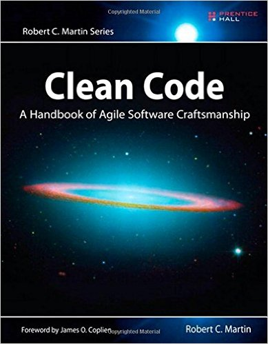

Clean Code

In his book Clean Code: A Handbook
of Agile Software Craftsmanship Robert C. Martin (aka. "Uncle Bob") makes the basic
observation that we read source code more often than we write code. In fact, reading and writing
are intimately tied via our need to make sense of what the source code in front of us does, how its different components
relate to each other and where ‘stuff’ (e.g., a variable declaration) can be found in the source.
Have you ever played back an edit session? In the 80s and 90s we had editors like Emacs that kept track of every keystroke. You could work for an hour and then play back your whole edit session like a high-speed movie. When I did this, the results were fascinating. The vast majority of the playback was scrolling and navigating to other modules! (Robert C. Martin, Clean Code)
Based on this, he introduces a set of software coding principles that help to improve the quality of source code
by making it easier to read. The aim is to reduce the effort required to understand code, to aid its inspection
for possible programming errors and to improve our ability to test and reuse parts of it.
In the lecture, I introduce a number of the principles that can be found in the early chapters of the book
(roughly chapters 1-5). You will find more advice on writing clean code on the web and in other books such
as The Pragmatic Programmer by
Hunt and Thomas or Joshua Bloch’s
Effective Java. Our
student
handbook also has useful advice on programming style.
Sometimes advice found in one place can contradict advice found elsewhere, so you should exercise judgement when
applying design guidelines. It is probably more important to be consistent than to follow any set of guidelines
slavishly.
Clean Code Basics
(Syntactical) correctness is not all there is. Just because it compiles and runs does not mean you have written
good code. Code should be easy to read. It should also be easy to modify, reuse and test.
Naming
- Use Intention-Revealing Names – the names of variables, methods, classes etc. should tell what these things are about.
- Avoid Disinformation – do not refer to something as a List unless it actually is a List.
- Use meaningful distinctions – arg1, arg2, arg3 are not meaningful.
- Use pronouncable, searchable names
- Avoid encodings – nameString contains superfluous information, the IDE can tell you what type a variable is.
- Leave interfaces unadorned – ShapeFactory rather than IShapeFactory, better to have a ShapeFactoryImpl as implementations are hidden from users!
- Avoid single-letter variable names and similar things that have nothing to do with the problem domain.
- Classes should have noun or noun-phrase names rather than verb names – AddressParser; avoid empty words such as Info, Data, Manager, Processor in a class name
- Same holds for objects
- Methods should have a verb name; Accessors, mutators, and predicates should be named for their value and prefixed with get, set, and is
- “Don’t be cute” – what does whack() do?
- Pick one word per concept and stick with it – either fetch, retrieve or get – but careful to use the word only for things that are the same
- Use solution-domain names
- Avoid meaningless prefixes – they work against code completion
- Wrap variables into methods and classes to give them context – what does ‘state’ mean if it does not appear in an Address class?
Methods
- Make them small! Do one thing, do it well, do it only!
- What happens in a method should be one conceptual level below the method name: to do A we need
to do B and C/
- Order functions so you can read them one by one like a narrative: to do C we need to do D and
E.
- A method that has sections does more than one thing!
- Do not mix levels of abstraction.
- switch() statements always do N things – use polymorphism to get rid of them
- Use descriptive names: "You know you are working on clean code when each routine turns out to be pretty
much what you expected."
- Methods should either do something or answer a question but not both at the same time.
Method Arguments
- "The ideal number of arguments for a function is zero (niladic). Next comes one (monadic),
followed closely by two (dyadic). Three arguments (triadic) should be avoided where possible. More
than three (polyadic) requires very special justification — and then shouldn’t be used anyway."
- The problem is that developers might get confused about the ordering of arguments. Java does
not have named arguments! Classes grouping arguments can help:
Circle makeCircle(double x, double y, double radius);
Circle makeCircle(Point center, double radius);
- The "builder pattern" can also be used to avoid the problem (see Bloch, Effective Java). We will encounter
it later in the module.
- Avoid output arguments – arguments are for inputs and nothing passed into a method as an
argument should get modified!
- "Side effects are lies. Your function promises to do one thing, but it also does other hidden things.
Sometimes it will make unexpected changes to the variables of its own class. Sometimes it will make them
to the parameters passed into the function or to system globals. In either case they are devious and
damaging mistruths that often result in strange temporal couplings and order dependencies."
public boolean checkPassword(String userName, String password) {
User user = UserGateway.findByName(userName);
if (user != User.NULL) {
String codedPhrase = user.getPhraseEncodedByPassword();
String phrase = cryptographer.decrypt(codedPhrase, password);
if ("Valid Password".equals(phrase)) {
Session.initialize(); return true;
}
}
return false;
}
- "Nothing can be quite so helpful as a well-placed comment. Nothing can clutter up a module ore than
frivolous dogmatic comments. Nothing can be quite so damaging as an old crufty comment that propagates
lies and misinformation."
- If our code is readable and informative enough then comments are not needed much.
- "When you find yourself in a position where you need to write a comment, think it through and see
whether there isn’t some way to turn the tables and express yourself in code."
- Express intention, mechanism should be obvious in clean code and does not need to be repeated in comment.
- Comments cause a maintenance problem: effort to maintain them is better invested in producing clean code that does not need comments.
- Good comments:
- Legal comments (author, copyright, license etc.); IDEs might collapse lengthy legal comments
- Informative Comments
- JavaDoc comments in public APIs
- Expressing intention
- Clarifications
- Explaining code that cannot be changed and is therefore unclear, e.g., when using a standard library
- Warning of consequences
- TODO comments
- Highlighting something as important that is not obvious
- All other comments should be considered carefully ;o)
- "Inaccurate comments are far worse than no comments at all. They delude and mislead."
- "COMMENTS DO NOT MAKE UP FOR BAD CODE!" Use functions or variable names instead of comments:
// Check to see if the employee is
// eligible for full benefits
if ((employee.flags & HOURLY_FLAG) && (employee.age > 65)) }
// versus
if (employee.isEligibleForFullBenefits())
- Vertical formatting
- keep things to a length that people will want to read.
- separate thoughts by empty lines (try removing empty lines in some code to see the effect)
- Keep related thoughts close (this is where dogmatic comments get in the way)
- Higher-level stuff at the top, details further down.
- Place variables close to where they are used.
- Instance variables should be at the top of a class.
- Prefer short lines over long ones, avoid lines of more than 80 characters, never use more than, say, 100.
- Use IDE functions (Source/Format or Ctrl-Shift-F) to keep things tidy and aligned with a consistent code style.
Trainwrecks
client.GetAccounts().getAccount(1).ApplyPayment(300.00).isValid().send()
- Instead, create variables to assign each partial result to. This improves readability, reduces
the line length, allows people to see the return types involved and creates lines that a debugger
can be pointed at.
- This is different from code like this used in builder pattern, where the builder class always returns
this:
ShapeBuilder.setColor(“red”).setSize(1).setStroke(1)
More on Clean Code
"Uncle Bob" and others have identified plenty more rules for producing clean code and I will try to bring
them into play over the course of the module. Writing clean code is not something you can adopt in a day
and the practices involved require regular exercise. In fact, it is near impossible to write clean code
straight away. Rather, clean code emerges through successive refinement of code over time. Hence, whenever
you work on your code, follow the boy/girl scout principle: "Leave the campground cleaner than you
found it".
Findbugs and Checkstyle
There are a set of automated tools that use simple heuristics to find problems with code but
despite the simplicity of the rules employed they can uncover a surprisingly large number of issues.
Findbugs and Checkstyle are both static source code analysers
that aim to uncover possible problems in Java source code and to help improve coding style.
Each produces a report on the problems found in Java source code that can be used as a starting
point for code improvements. Of the three tools, Findbugs is arguably the most important one as any
output it produces is likely to be an indication of an actual programming mistake - as opposed to
‘merely’ a failure to adhere to stylistic conventions.
Using the two together is a great way
to improve the quality of the code. The fact that they can be run automatically means they can be
used routinely, uncovering problems quickly and without wasting human effort. Any code reviews can
then focus on the kinds of more complex problems that these static analysis tools are not
uncovering.